Quality swimming pool maintenance and repair backed by three generations of tradition, service, and experience.
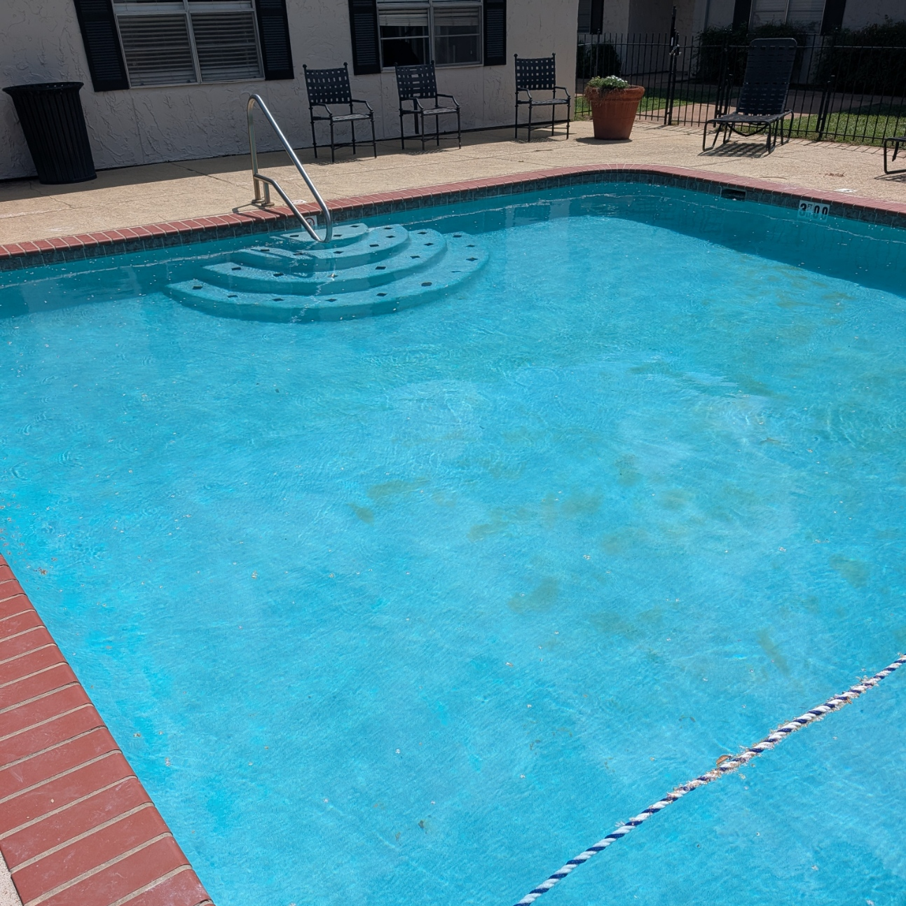
Weekly Maintenance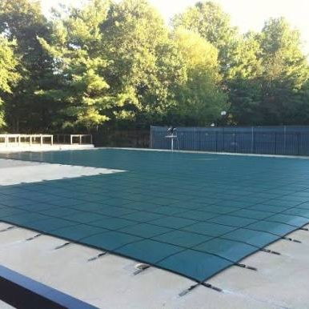
Winterization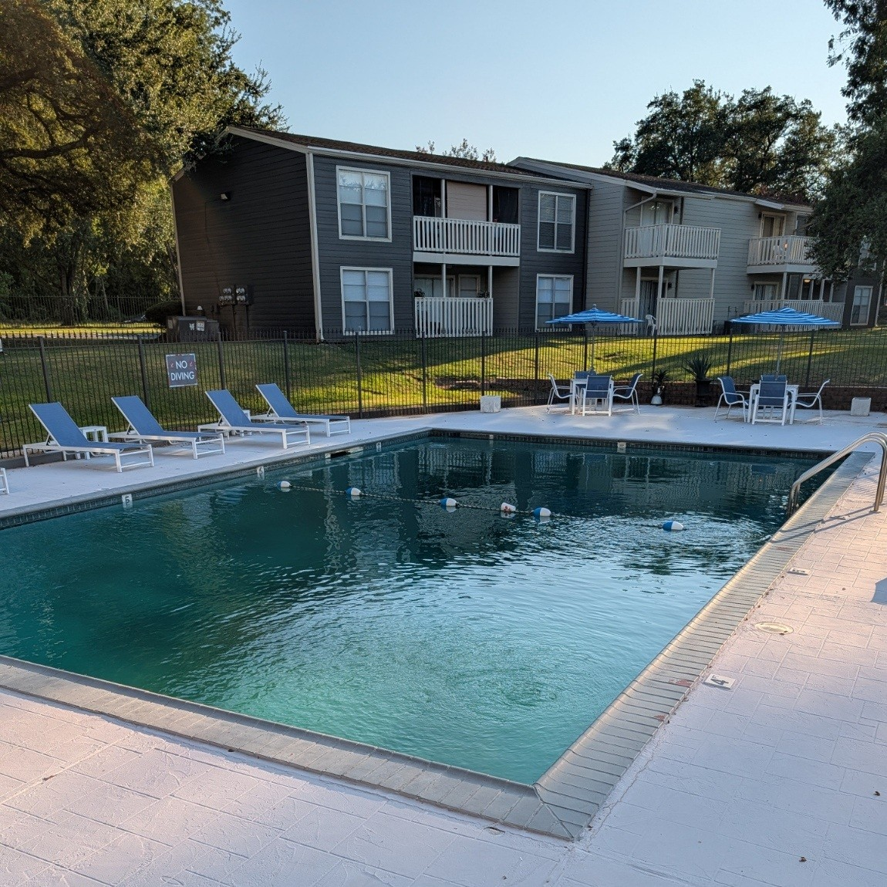
Green to Clean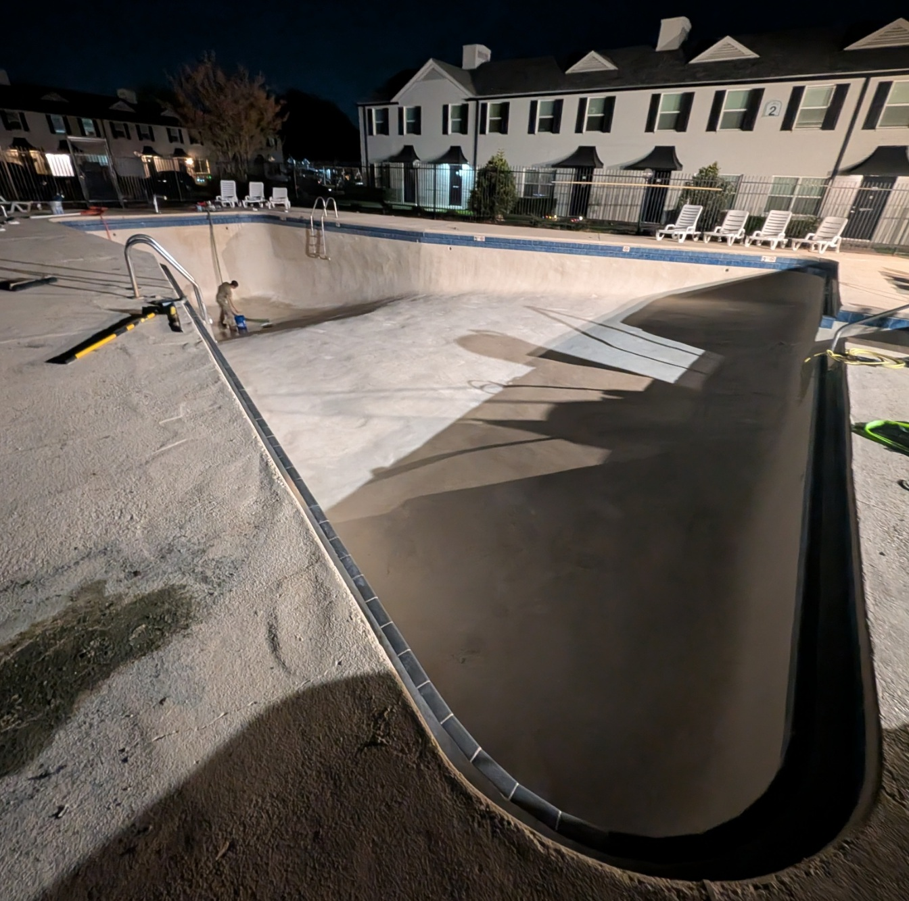
Drain and Clean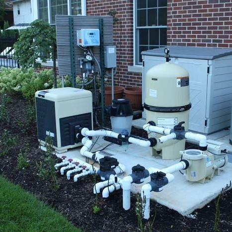
Equipment Install & Repair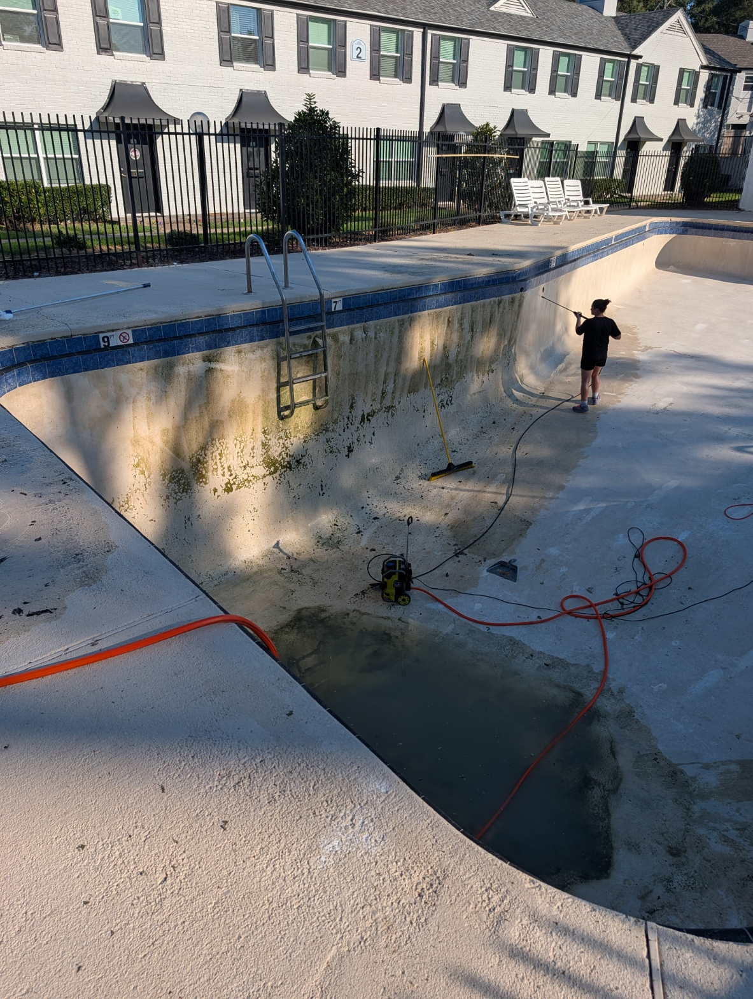
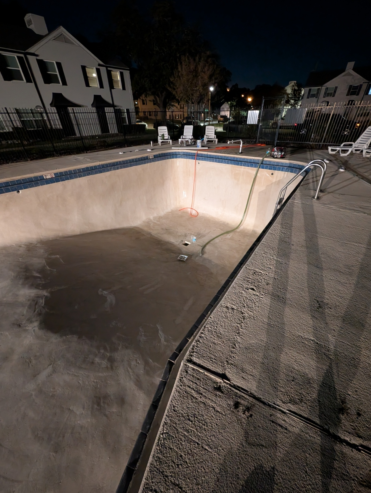
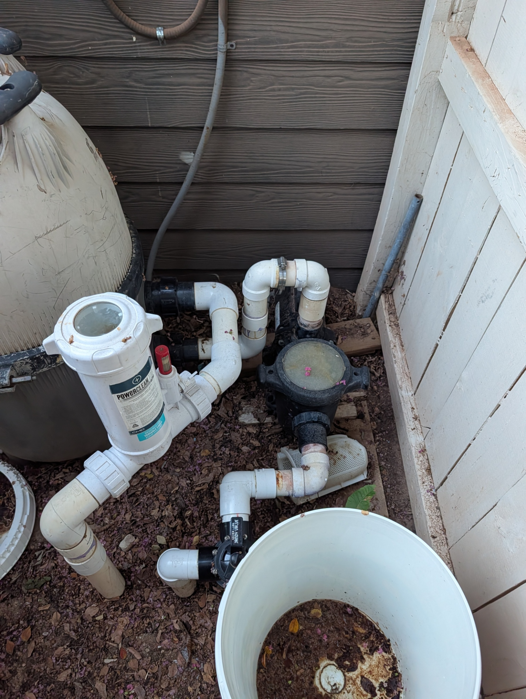
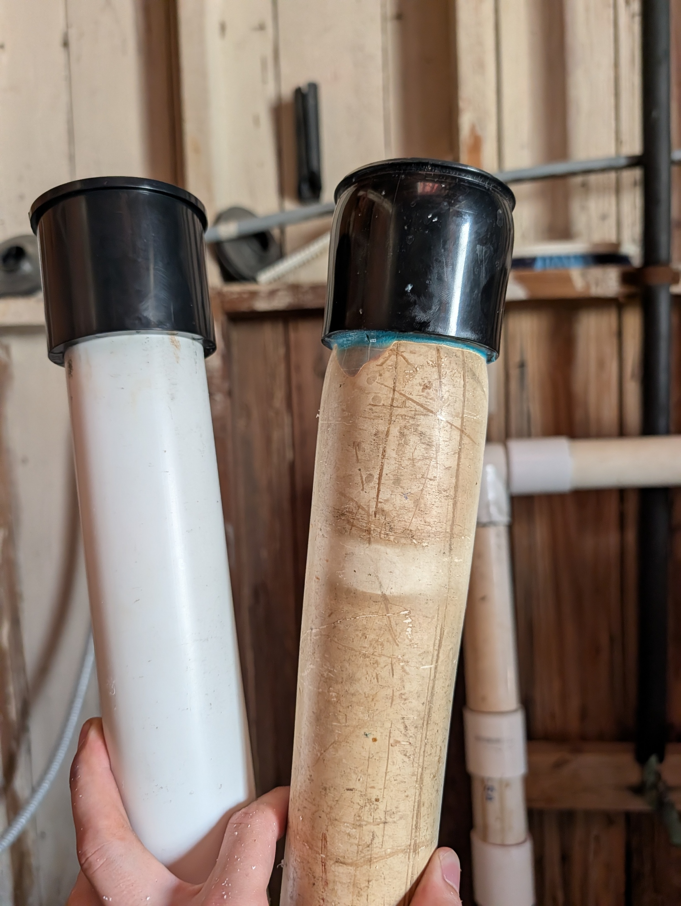
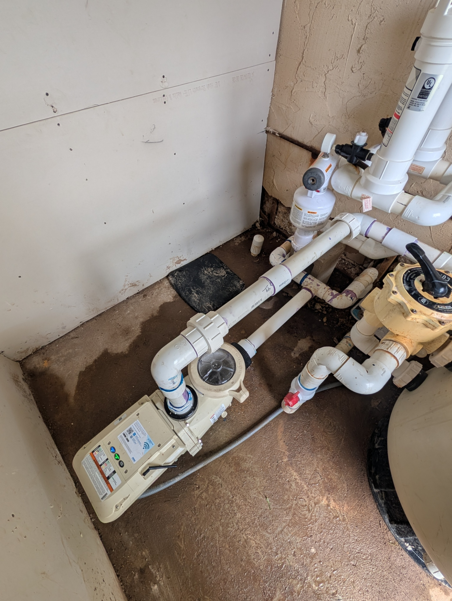
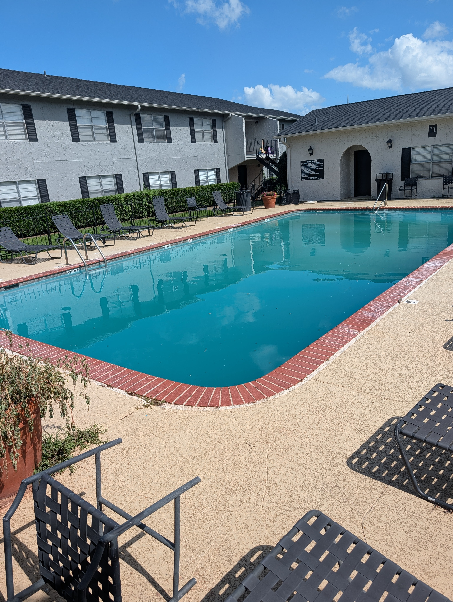
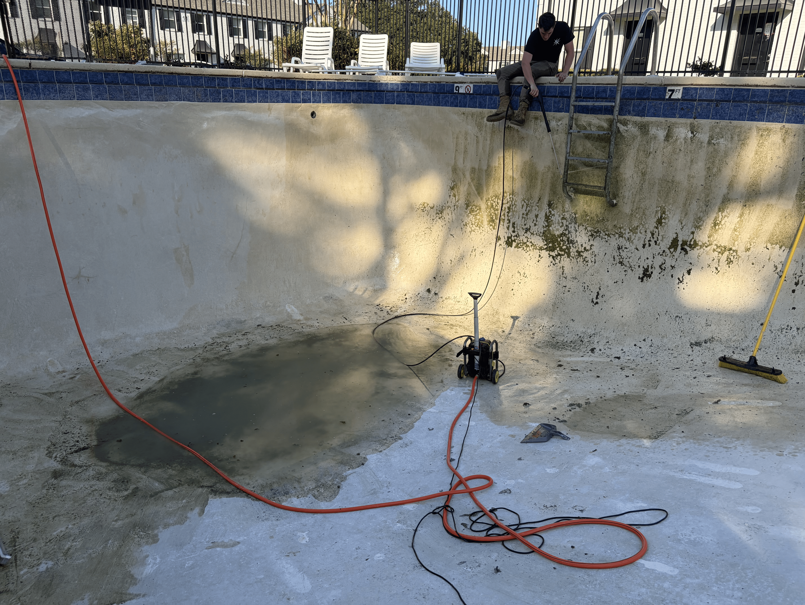
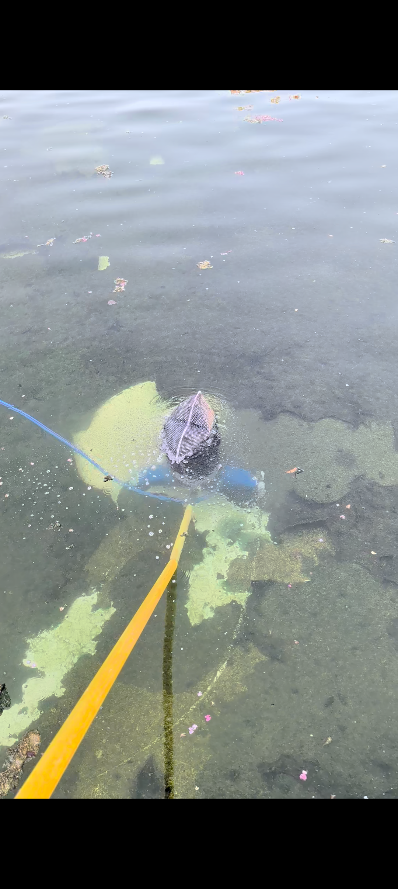
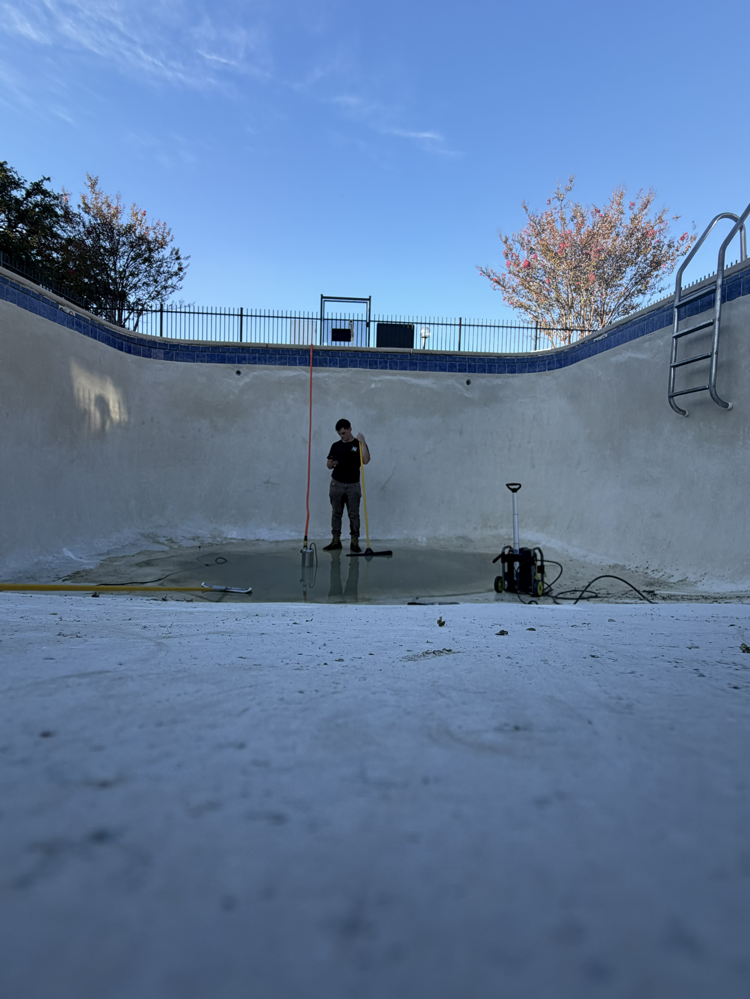
Mark Coleman Pool Service is built on a standard of pool care shaped by three generations of experience. As a third-generation pool technician, I grew up around the knowledge, attention to detail, and work ethic that go into maintaining a pool the right way.
Today, I bring that experience to every customer personally with a focus on reliable service, clear communication, and consistent, high quality care. My goal is simple: keep your pool clean, healthy, and ready to enjoy while providing dependable service you can count on week after week.
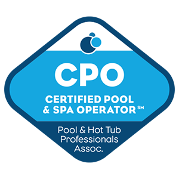
Certified Pool and Spa Operator (CPO)™